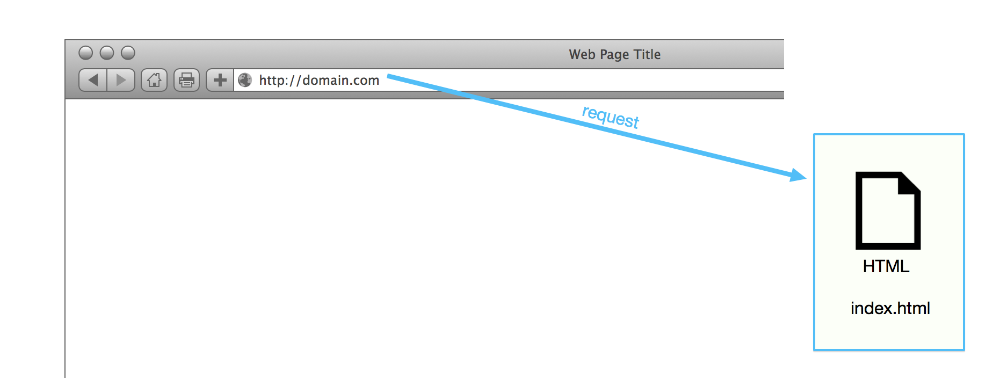
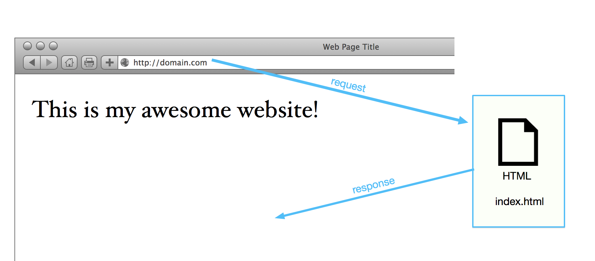

IPR
HTML
HTML
- 1980, gab Tim den Vorschlag für einen besseren Weg für Forscher Dokumente zu teilen und zu lesen
- 1990 Vorschlag für das WWW

HTML
- Hyper Text Markup Language
- Hypertext: Überwinden der Beschränkungen von geschriebenen Text. Interaktiv.
- Markup Language: "Aufpeppen" eines Dokuments mit Attributen wie Schriftgrößen, Bildern, Listen, Links zu anderen Seiten…
- HTML ist in normalen Textdateien geschrieben.
HTML Beispiel
See the Pen NgJmXR by Mathias Maciossek (@maciossek) on CodePen.
Was passiert beim eingeben einer URL?
Was passiert beim eingeben einer URL?
HTTP
- Hyper Text Transfer Protocol
- Stateless
HTTP Kommandos
- GET: Hole Daten vom Server
- POST: Hole Daten vom Server und sende Daten, z.B. Formulardaten
- HEAD: Wie GET, aber ohne die eigentlichen Daten des Bodies zu senden (u.a. zum Cache-Check zur Aktualitätsprüfung im Browsertests)
- PUT: Update von Daten
- OPTIONS: Anforderung einer Liste vom Server unterstützter Optionen
HTTP/2 (Version 2)
- Basierend auf SPDY, einem Protokoll von Google.
- Die HTTP 1.1 Syntax und Semantik bleibt erhalten.
- Asynchrone, parallele Verbindungen („Multiplexing“)
- Verschlüsselung...
- Request-Response Warteschlange
HTML Historie
- Jan 1997: HTML 3.2
- Dec 1997: HTML 4.0
- Dec 1999: HTML 4.0.1
- May 2011: Last call for HTML 5.0
Aufbau HTML Dokument
See the Pen yXwrpo by Mathias Maciossek (@maciossek) on CodePen.
Aufbau HTML-Tags
content
See the Pen YQgMYb by Mathias Maciossek (@maciossek) on CodePen.
Listen und Texte
See the Pen weOZyG by Mathias Maciossek (@maciossek) on CodePen.
Links
See the Pen eRXoVV by Mathias Maciossek (@maciossek) on CodePen.
Tabellen
See the Pen owVOEV by Mathias Maciossek (@maciossek) on CodePen.
Videos
See the Pen YQgMeo by Mathias Maciossek (@maciossek) on CodePen.
Divs und Positionierung
See the Pen gREyep by Mathias Maciossek (@maciossek) on CodePen.
iFrames
See the Pen jwJRzm by Mathias Maciossek (@maciossek) on CodePen.